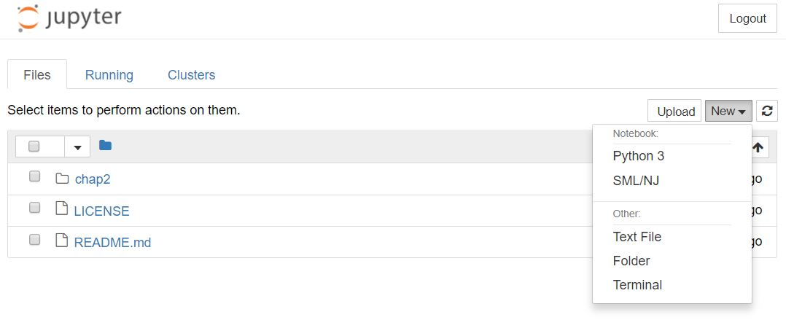
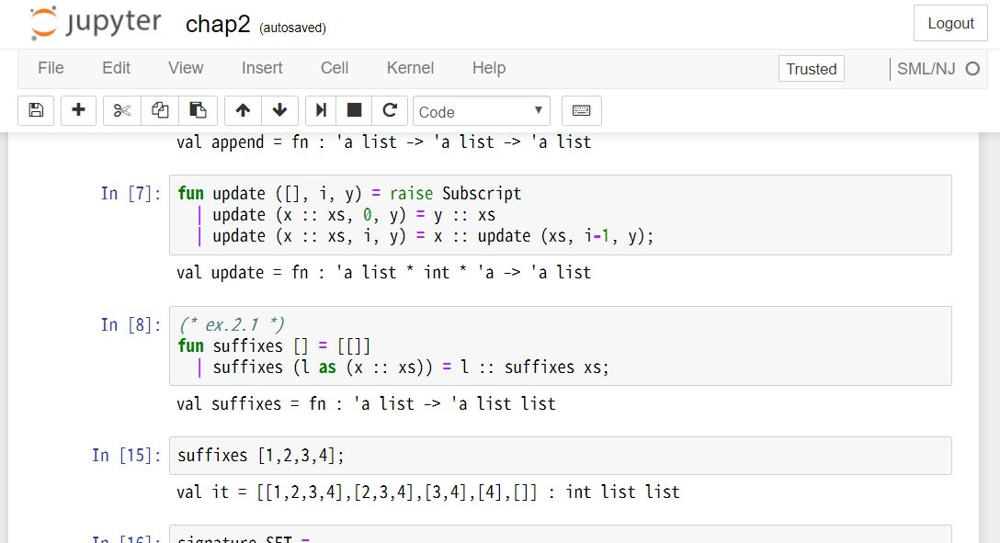

SML/NJ の Jupyter Kernel を作る
「純粋関数型データ構造」を読むために，SML/NJ の Jupyter Simple Kernel を作った話．
いきさつ
純粋関数型 と書いてあったのでてっきり，Haskell のデータ構造の本 かと思って(間違って)買ってしまった． しかし，同じタイミングで「名古屋PFDS読書会」という勉強会が始まったので，それに合わせて読もうかと思った． で，どーせなら Jupyter Notebook でやりたいなと思ってカーネルを作ってみた．
作った
Io や Erleng で同じことしてたので，同じように作った．
Docker に Jupyter(Python) と SML/NJ を入れて作業した． SML/NJ のインストールの仕方は，公式サイトと Docker Hub にあった Dockerfile を参考にした．
最終的なカーネルのコードはこんな感じ．
from ipykernel.kernelbase import Kernel
from pexpect import replwrap, EOF
from subprocess import check_output
import re
import signal
crlf_pat = re.compile(r'[\r\n]+')
class SMLNJKernel(Kernel):
implementation = 'SML/NJ'
implementation_version = '0.0.1'
language_info = {
'name': 'SML/NJ',
'codemirror_mode': 'fsharp',
'mimetype': 'text/plain',
'file_extension': '.sml'
}
_language_version = '110.81'
@property
def language_version(self):
if self._language_version is None:
self._language_version = check_output(['sml', '']).decode('utf-8')
return self._language_version
@property
def banner(self):
return u'Simple SML/NJ Kernel (%s)' % self.language_version
def __init__(self, **kwargs):
Kernel.__init__(self, **kwargs)
self._start_smlnj()
def _start_smlnj(self):
sig = signal.signal(signal.SIGINT, signal.SIG_DFL)
try:
self.smlnjwrapper = replwrap.REPLWrapper("sml", "- ", None)
finally:
signal.signal(signal.SIGINT, sig)
def do_execute(self, code, silent, store_history=True,
user_expressions=None, allow_stdin=False):
code = crlf_pat.sub(' ', code.strip())
if not code:
return {'status': 'ok', 'execution_count': self.execution_count,
'payload': [], 'user_expressions': {}}
interrupted = False
try:
output = self.smlnjwrapper.run_command(code, timeout=None)
except KeyboardInterrupt:
self.smlnjwrapper.child.sendintr()
interrupted = True
self.smlnjwrapper._expect_prompt()
output = self.smlnjwrapper.child.before
except EOF:
output = self.smlnjwrapper.child.before + 'Restarting SML/NJ'
self._start_smlnjang()
if not silent:
# Send standard output
stream_content = {'name': 'stdout', 'text': output}
self.send_response(self.iopub_socket, 'stream', stream_content)
if interrupted:
return {'status': 'abort', 'execution_count': self.execution_count}
return {'status': 'ok', 'execution_count': self.execution_count,
'payload': [], 'user_expressions': {}}
# ===== MAIN =====
if __name__ == '__main__':
from IPython.kernel.zmq.kernelapp import IPKernelApp
IPKernelApp.launch_instance(kernel_class=SMLNJKernel)プロンプトを設定することが出来無そうだったので，そのまま - を指定している． そのため，どこかでおかしくなるかも…
あと，シンタックスハイライトに F# を使った． Jupyter のシンタックスハイライトの CodeMirroe には SML が無かった ので，なんとなく近そうな F# にした(OCaml の方が良いのだろうか？)．
実行


ちなみに
末尾にセミコロン ; を忘れると，セルの評価が終わらないので注意． やっちゃった場合は，一度止めて(四角の停止ボタンを押す)から再評価してください．
おしまい
今のところ，とりあえず動いてるが，サクッと適当に作ったので，どこかおかしい部分があるかも…